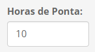

|
Na barra de navegação pode-se acessar a aba do cálculo do balanço de ponta, a aba de gráficos, o link para ajuda e o botão de sair. |
|
|
Na barra de navegação pode-se acessar a aba do cálculo do balanço de ponta, a aba de gráficos, o link para ajuda e o botão de sair. |

|
Nesta caixa de seleção o usuário deve escolher o tipo de caso que vai ser usado para a execução do balanço de ponta. |
| Nesta caixa de seleção o usuário deve escolher o modelo utilizado no caso se referência. |
| Nesta caixa de seleção o usuário deve escolher o tipo de demanda que será usada no cálculo do balanço de ponta. As opções são: Determinística ou Líquida. Com a demanda determinística será calculado o balanço com um valor de demanda por janela de tempo (mês). Já com a demanda líquida, o balanço será calculado com uma distribuição de valores de demanda formada pela demanda bruta menos as gerações não controláveis. |
| Nesta caixa de texto o usuário deve definir o número do caso em estudo. |
|  | Nesta caixa de texto o usuário deve definir o número de horas de ponta para cálculo do balanço de ponta. O valor padrão usado pela EPE é de 10 horas. |
| Nesta caixa de texto o usuário deve definir a descrição do caso. Este campo é aberto para colocar as informações relevantes para descrever o caso. |

|
Nestas caixas de texto o usuário deve definir as datas de início e fim do estudo do MDI. O formato deve ser aaaamm. Por exemplo 201901 e 203312. |

|
Nesta caixa de texto o usuário deve definir quais os códigos dos REEs que terão como disponibilidade de potência a geração hidráulica média. Exemplo de preenchimento para REEs 6,7 e 9: 6, 7, 9 |
| Nesta caixa de texto o usuário deve definir quais os códigos dos REEs que terão como disponibilidade de potência a geração hidráulica da ponta. Exemplo de preenchimento para REEs 6,7 e 9: 6, 7, 9 |

|
Ao pressionar o botão indicado, o usuário poderá selecionar a base SQLite onde serão gravadas as informações do balanço de ponta. |

|
Ao pressionar o botão indicado, a janela mostrada abaixo será aberta para o usuário. Nela será solicitada a escolha do local e a do nome da base SQLite onde serão gravadas as informações do balanço de ponta.
|

|
Ao pressionar o botão indicado, o usuário poderá selecionar a pasta onde estão os arquivos do caso do NEWAVE ou do SUISHI que serão usados para o cáculo do balanço de ponta. |

|
Ao pressionar o botão indicado, o usuário irá executar o cáculo do balanço de ponta. Caso a caixa de seleção esteja marcada, serão gravadas somente as informações por REE (BPO_A16_BALANCO e BPO_A20_BALANCO_SUBSISTEMA). Se estiver desmarcada, as informações de despacho por gerador também serão gravadas (BPO_A17_BALANCO_GERADOR). |